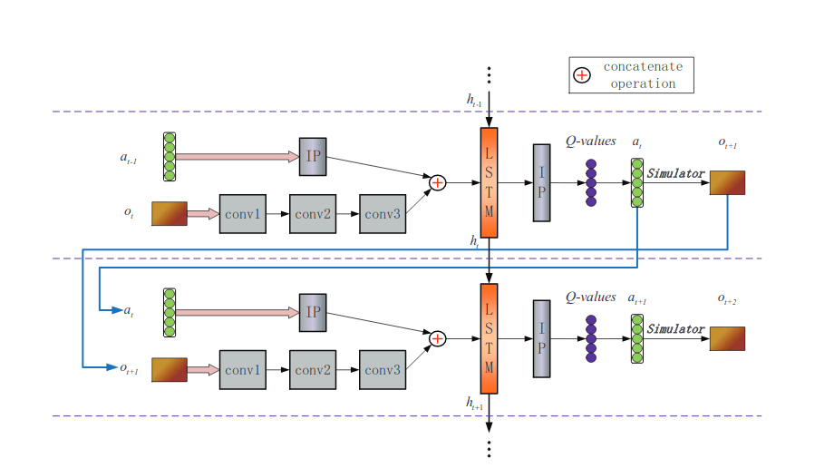
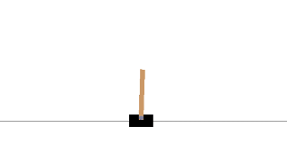
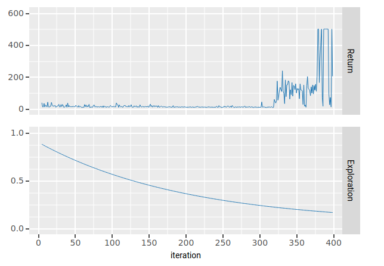
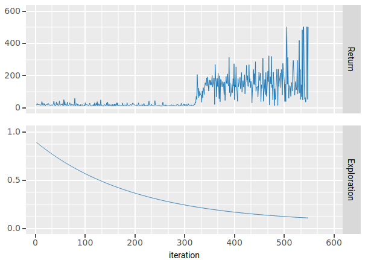
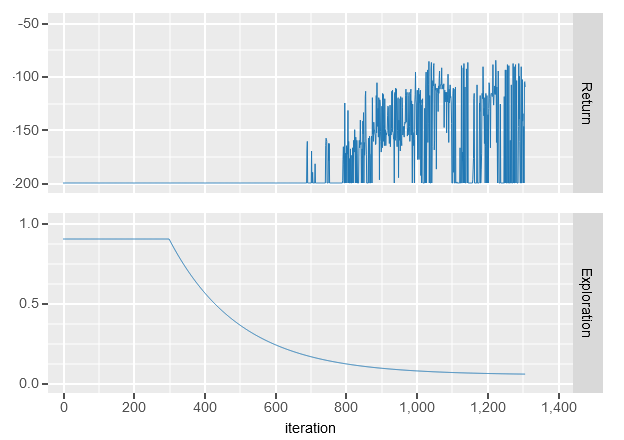
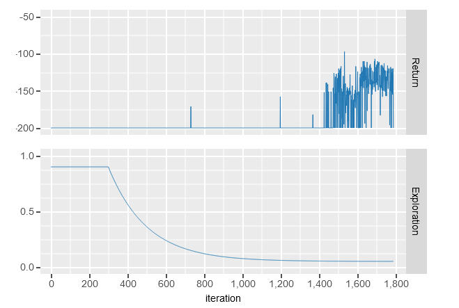

ADRQN-PyTorch: A Torch implementation of the action-specific deep recurrent Q network.

Before you read (source code)
An open source Jupyter notebook including source code for this blog post is available. Click the link below to open an interactive version of the source code in Google Colab.
Note: Enable GPU usage in the runtime settings for training with cuda.

Introduction
Deep Q networks have proven to be an easy to implement method for solving control problems in both continuous or large discrete state spaces. For instance, a highly cited paper by a group of Google Deepmind researchers [1] proposes the use of a deep (convolutional) neural network for approximating the optimal Q function in Atari games. Since then, numerous improvements to the deep Q network (DQN) algorithm have emerged, one notable example being the Rainbow agent [2], which combines fruitful approaches from different subfields of reinforcement learning including distributional RL, multi-step targets and dueling networks.
While the above efforts to improve upon the performance of DQNs have proven to be effective, most of the research focuses on fully observable environments, or at least introduces workarounds to overcome partial observability by combining multiple consecutive frames into a single observation [1]. If such design choices are not possible, one needs a different mechanism for keeping track of the history of observations when approximating the Q function with a neural network. A rather straight forward way to achieve this, is by including recurrence in the Q network and this is exactly what the action-specific deep recurrent Q network (ADRQN) does [3].
In this post, we will go through a simple PyTorch implementation of the ADRQN including a small scale experiment on classical control tasks of the OpenAI gym.
Model Architecture
The ADRQN [3] is a modification of the DQN algorithm, which introduces an intermediate LSTM layer for remembering action-observation pairs when dealing with partial observability. An outline of the originally proposed architecture can be seen below in figure 1.
| Figure 1 (taken from the original paper [3]): ADRQN architecture |
|---|
|  |
At each time step $t$ the model takes an observation $o_{t}$ and the action that led to that observation $a_{t-1}$, as well as the hidden state $h_{t-1}$ from the last forward pass of the LSTM layer. The observation $o_t$ gets fed through a series of convolutional downsampling layers, whereas the action $a_{t-1}$ gets embedded in a higher dimensional space through a fully connected linear layer (named IP in the figure). Then, the downsampled observation and embedded action get concatenated and fed into a LSTM, which updates its hidden state $h_t$ and outputs a sequence that gets fed into another linearly connected layer. The output size of the final linear layer matches the number of actions to approximate Q values for each possible action.
Since we will be testing this architecture on low-dimensional physics based state vectors of the classical control tasks in the OpenAI gym, we replace the convolutional layers with linear layers and ReLU activations. Furthermore, we implement an act function into the model class for executing epsilon greedy actions given an action-observation pair.
class ADRQN(nn.Module):
def __init__(self, n_actions, state_size, embedding_size):
super(ADRQN, self).__init__()
self.n_actions = n_actions
self.embedding_size = embedding_size
self.embedder = nn.Linear(n_actions, embedding_size)
self.obs_layer = nn.Linear(state_size, 16)
self.obs_layer2 = nn.Linear(16, 32)
self.lstm = nn.LSTM(input_size = 32 + embedding_size, hidden_size = 128, batch_first = True)
self.out_layer = nn.Linear(128, n_actions)
def forward(self, observation, action, hidden = None):
#Takes observations with shape (batch_size, seq_len, state_size)
#Takes one_hot actions with shape (batch_size, seq_len, n_actions)
action_embedded = self.embedder(action)
observation = F.relu(self.obs_layer(observation))
observation = F.relu(self.obs_layer2(observation))
lstm_input = torch.cat([observation, action_embedded], dim = -1)
if hidden is not None:
lstm_out, hidden_out = self.lstm(lstm_input, hidden)
else:
lstm_out, hidden_out = self.lstm(lstm_input)
q_values = self.out_layer(lstm_out)
return q_values, hidden_out
def act(self, observation, last_action, epsilon, hidden = None):
q_values, hidden_out = self.forward(observation, last_action, hidden)
if np.random.uniform() > epsilon:
action = torch.argmax(q_values).item()
else:
action = np.random.randint(self.n_actions)
return action, hidden_out
If no hidden state is provided to the forward pass, then we omit specifying the hidden argument of the LSTM layer, which equates to setting the hidden state to a zero tensor.
Sequential Experience Buffer
Besides the model, it is common for DQN type algorithms to use an experience buffer which stores past transitions and provides batches of random transitions for learning the network parameters. Since we are dealing with a recurrent network, we would like to sample batches of sequences at random, on which we then unroll the LSTM to provide a batch of Q-value predictions. While there are various ways to implement such a buffer, we use a simple list that (in order) stores all visited transition tuples $(a_{t-1}, o_t, r_t, a_t, o_{t+1}, d_{t+1})$, where $r_t$ is the reward gained after executing action $a_t$ in observation $o_t$ and $d_{t+1}$ is true if $o_{t+1}$ is a terminal state or otherwise false.
class ExpBuffer():
def __init__(self, max_storage, sample_length):
self.max_storage = max_storage
self.sample_length = sample_length
self.counter = -1
self.filled = -1
self.storage = [0 for i in range(max_storage)]
def write_tuple(self, aoarod):
if self.counter < self.max_storage-1:
self.counter +=1
if self.filled < self.max_storage-1:
self.filled += 1
else:
self.counter = 0
self.storage[self.counter] = aoarod
def sample(self, batch_size):
#Returns tensors of sizes (batch_size, seq_len, *) where * depends on action/observation/return/done
seq_len = self.sample_length
last_actions = []
last_observations = []
actions = []
rewards = []
observations = []
dones = []
for i in range(batch_size):
if self.filled - seq_len < 0 :
raise Exception("Reduce seq_len or increase exploration at start.")
start_idx = np.random.randint(self.filled-seq_len)
last_act, last_obs, act, rew, obs, done = zip(*self.storage[start_idx:start_idx+seq_len])
last_actions.append(list(last_act))
last_observations.append(last_obs)
actions.append(list(act))
rewards.append(list(rew))
observations.append(list(obs))
dones.append(list(done))
return torch.tensor(last_actions).cuda(), torch.tensor(last_observations, dtype = torch.float32).cuda(), torch.tensor(actions).cuda(), torch.tensor(rewards).float().cuda() , torch.tensor(observations, dtype = torch.float32).cuda(), torch.tensor(dones).cuda()
Note that with this implementation, we allow the buffer to return sequences that stretch over multiple episodes. If you want to try a buffer that restricts to sampling sequences from a single episode, check out the full source code which includes such an alternative buffer.
Training the Network
In the main loop, we sample batches of sequences (with a fixed length) from the experience buffer after each time an action gets executed. To stabilize training, we employ a standard trick of splitting the task of predicting and evaluating Q values into two separate networks, a target network with parameters $\theta^-$ and the main network with parameters $\theta$. For each batch of transition sequences $(a_{t-1}, o_t, r_t, a_t, o_{t+1}, d_{t+1})$ we then compute the $Q$ value with respect to the target network
$$y_j = r_j + \gamma \cdot (1-\text{is_done}(o_{t+1}))\cdot \max_{a}Q(h_j, a_j, o_{j+1}, a; \theta^-),$$
where $\text{is_done}(o_{t+1}) = 1$ if $o_{t+1}$ is a terminal state and $0$ otherwise. Subsequently, we update the parameters of our main $Q$ network via the gradient of the quadratic loss
$$ \nabla_\theta (y_j - Q(h_{j-1}, a_{j-1}, o_j, a_j; \theta))^2. $$
In the implementation, we made use of the Adam optimizer for taking these gradient updates. At the end of each episode we update the target network parameters $\theta^- := \theta$. Furthermore, we give the agent some time to explore and fill the experience buffer before updating the networks.
Besides that, we employ an $\epsilon$-greedy policy with respect to the $Q$ network and an adaptive exploration schedule for decreasing $\epsilon$ over time. To induce partial observability, we also introduce a blinding probability parameter which sets incoming observations to a zero tensor with a specified probability.
env = gym.make('MountainCar-v0')
state_size = env.observation_space.shape[0]
n_actions = env.action_space.n
embedding_size = 8
M_episodes = 2500
replay_buffer_size = 100000
sample_length = 20
replay_buffer = ExpBuffer(replay_buffer_size, sample_length)
batch_size = 64
eps_start = 0.9
eps = eps_start
eps_end = 0.05
eps_decay = 200
gamma = 0.999
learning_rate = 0.005
blind_prob = 0
EXPLORE = 300
adrqn = ADRQN(n_actions, state_size, embedding_size).cuda()
adrqn_target = ADRQN(n_actions, state_size, embedding_size).cuda()
adrqn_target.load_state_dict(adrqn.state_dict())
optimizer = torch.optim.Adam(adrqn.parameters(), lr = learning_rate)
for i_episode in range(M_episodes):
done = False
hidden = None
last_action = 0
last_observation = env.reset()
for t in count():
action, hidden = adrqn.act(torch.tensor(last_observation).float().view(1,1,-1).cuda(), F.one_hot(torch.tensor(last_action), n_actions).view(1,1,-1).float().cuda(), hidden = hidden, epsilon = eps)
observation, reward, done, info = env.step(action)
if np.random.rand() < blind_prob:
#Induce partial observability
observation = np.zeros_like(observation)
reward = np.sign(reward)
replay_buffer.write_tuple((last_action, last_observation, action, reward, observation, done))
last_action = action
last_observation = observation
#Updating Networks
if i_episode > EXPLORE:
#Update exploration parameter
eps = eps_end + (eps_start - eps_end) * math.exp((-1*(i_episode-EXPLORE))/eps_decay)
#Sample a batch of action/observation/reward sequences
last_actions, last_observations, actions, rewards, observations, dones = replay_buffer.sample(batch_size)
#Pass the sequence of last observations and actions through the network
q_values, _ = adrqn.forward(last_observations, F.one_hot(last_actions, n_actions).float())
#Get the q_values for the executed actions in the respective observations
q_values = torch.gather(q_values, -1, actions.unsqueeze(-1)).squeeze(-1)
#Query the target network for Q value predictions
predicted_q_values, _ = adrqn_target.forward(observations, F.one_hot(actions, n_actions).float())
#Compute Q update target
target_values = rewards + (gamma * (1 - dones.float()) * torch.max(predicted_q_values, dim = -1)[0])
#Updating network parameters
optimizer.zero_grad()
loss = torch.nn.MSELoss()(q_values , target_values.detach())
loss.backward()
optimizer.step()
if done:
break
#Update the target network
adrqn_target.load_state_dict(adrqn.state_dict())
Results
This section shows some learning results on the MountainCar-v0 and CartPole-v1 tasks of the OpenAI gym. The main point here is to show that the network works and not to discuss computational/sample efficiency. However, the authors of the ADRQN paper [3] state that the ADRQN outperforms other state of the art DQN variants in partially observable environments.
CartPole-v1
In the cartpole environment, the goal of the agent is learning a policy that manages to balance a pole which is attached to a cart moving along a frictionless track. The observation consists of a $4$-dimensional array, which includes the position and velocity of the cart and the pole respectively. The rewards directly correspond to the time that the pole can be balanced and provide $+1$ for each time step. OpenAI considers this environment solved when the agent receives an average return of $195$ or higher over $100$ consecutive trials.

We test two different scenarios in this environment, one where the agent has full access to the observations and one where the observations drop out with a probability of $\frac{1}{2}$. Although training of our shallow ADRQN version is quite fast, we give the agent $300$ time steps to explore before updating the parameters. Figure 2 and 3 show the undiscounted reward and exploration scheme of the agent in the fully observable and partially observable cases respectively. While in the fully observable case, the agent learns a near optimal policy (reaching the maximum of $500$ time steps) after around 100 episodes of learning (with 300 episodes of stored transitions), learning an optimal policy in the partial observable case takes around twice as many learning iterations. Although the learning process is significantly more noisy in the partially observable case, the agent still manages to learn a policy that somewhat consistently achieves the maximum return.
| Figure 2: ADRQN learning in Cartpole-v1 (fully observable) |
|---|
|  |
| Figure 3: ADRQN learning in Cartpole-v1 with 0.5 observation censoring probability |
|---|
|  |
MountainCar-v0
The mountaincar environment is slightly more challenging due to highly sparse rewards. The agent receives a reward of $-1$ at each timestep and is given $200$ time steps to reach the flag at the top of the mountain. Without any modifications to the algorithm, the $\epsilon$-greedy exploration scheme takes quite a long time to discover where to go with the car. The observations consist of a $2$-dimensional array including position and velocity, whereas the action space is discrete and consists of pushing the car to the left, right or not at all. OpenAI considers this environment solved when the agent gets a reward of at least -110.0 over 100 consecutive trials.

Figures 4 and 5 show the learning progress in the fully observable and partially observable cases respectively. We did not train the agent until the environment was solved. However, we can see that (after an initial exploration phase of 300 episodes) the agent learns to consistently reach a reward of around $-110$ and $-125$ in the fully observable and partially observable cases respectively.
| Figure 4: ADRQN learning in MountainCar-v0 (fully observable) |
|---|
|  |
| Figure 5: ADRQN learning in MountainCar with 0.5 observation censoring probability |
|---|
|  |
References
[1] Volodymyr Mnih, Kavukcuoglu Koray, Silver David, Rusu Andrei A, Veness Joel, Belle-mare Marc G, Graves Alex, Riedmiller Martin, Fidje-land Andreas K, Ostrovski Georg, et al. Human-level control through deep reinforcement learning. In: Nature, 518 (7540): 529–533, 2015.
[2] M. Hessel, J. Modayil, H. Van Hasselt, T. Schaul, G. Ostrovski, W. Dabney, D. Horgan, B. Piot,M. Azar, and D. Silver. Rainbow: Combining improvements in deep reinforcement learning. In: Thirty-Second AAAI Conference on Artificial Intelligence, 2018
[3] Zhu, P., Li, X., Poupart, P., and Miao, G. On improving deep reinforcementlearning for pomdps. arXiv preprint arXiv:1804.06309 (2018).
Markus Peschl
MSc Applied Mathematics Student
My research interests include deep reinforcement learning and stochastic processes.